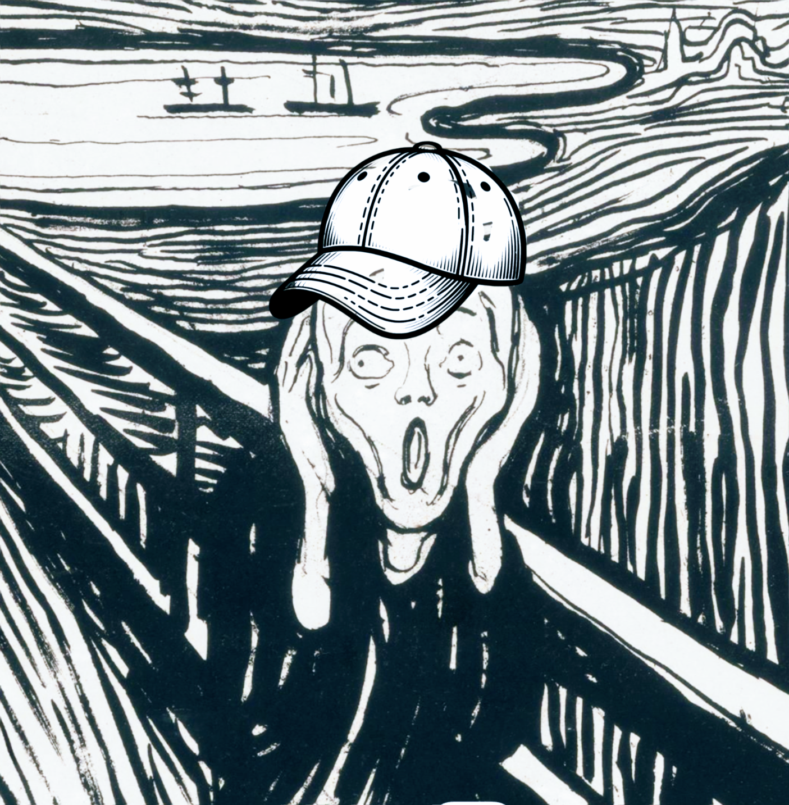

<!DOCTYPE html>

<head>
<meta charset="utf-8"/>
<meta content="width=device-width, initial-scale=1.0" name="viewport"/>
<title>Episode 80: Antimantras &amp; Repetitive Thought Injuries</title>
<link rel="stylesheet" href="../../css/style.css" />
<style>
.fullw { max-width: 800px; }
figure { margin: 0; }
</style>
<script type="text/javascript">

</script>
</head>
<body>
<div id="main">
<h1><a href="/">Everyday Systems</a>: <a href="../../">Podcast</a> : Episode 80</h1>
<h2>Antimantras &amp; Repetitive Thought Injuries</h2>
<iframe class=\"yt-player\" width=\"100%\" height=\"200\" src=\"https://www.youtube-nocookie.com/embed/8nkV_5d3MeU?modestbranding=1&rel=0&playsinline=1" title="Everyday Systems Podcast Episode 80" loading="lazy" allow="accelerometer; autoplay; clipboard-write; encrypted-media; gyroscope; picture-in-picture; web-share" referrerpolicy="strict-origin-when-cross-origin" allowfullscreen></iframe>
<p style="text-align:center"><a href="http://media.libsyn.com/media/reinhard/eds-80-antimantras.mp3">Download mp3</a></p>


<p>Hi, this is Reinhard from Everyday Systems. Welcome to episode 80, “Antimantras &amp; Repetitive Thought Injuries.”
</p>
<p>You’ve all heard of RSI, I’m sure: repetitive stress injuries, like carpal tunnel syndrome. It’s when you perform some movement excessively frequently, so that a tendon, muscles or nerve become irritated or inflamed. People who type too much get this or use the mouse too much, or people who play a musical instrument, to pick just a few examples.
</p>
<p>Well, a few years ago I came across a phrase on some random web site that made an impression on me. It went like this:
</p>
<p>“Depression is a repetitive thought injury.”
</p>
<p>I love this. It’s brilliant. And I’m sure I’m remembering it verbatim. But the source – the web site it was on – seems to have blipped out of existence on the internet. I can’t even find it on the wayback machine. I now get zero hits when I google that in quotes for an exact match, and 6 hits, that are not it, and are not in any interesting context, when I reduce it to just “repetitive thought injury” in quotes. Even <a href="https://everydaysystems.com/podcast/episode/76/">my friend, Chat GPT</a>, ever eager to help, is at a loss. It’s a shame, because I think it's a rather brilliant formulation, and I’d love to learn more from whoever came up with it.
</p>
<p>On this website that no longer exists, there was an example given that I also remember more or less exactly and that I think is similarly wise and pithy. The mystery author wrote (about depression):
</p>
<p>“It’s like a baseball player who keeps telling himself ‘I should have caught the ball, I should have caught the ball, I should have caught the ball’ over and over again. He can’t shake it. He can’t let it go.”
</p>
<p>I love these formulations, these metaphors, Depression as a kind of RSI and depressed perspn as the baseball player, because they're so simple, so concrete, and yet really capture something important about the essence of this overwhelming  – and overwhelmingly complex feeling – psychological condition. And in a way that gives hope that something can be done about it. Physical RSI can be treated. Maybe psychological RSI can too. The baseball player can stop saying these things to himself. Do psychological stretches. We can imagine it at least.
</p>
<p>For me, personally, anxiety is a greater problem than depression. But I think the same principle applies. I think anxiety, too, can be seen as a repetitive thought injury: “I’m going to drop the ball, I’m going to drop the ball, I’m going to drop the ball.” It works just as well in the future tense.
</p>
<p>I’m going to turn to a slightly different subject for a moment, and then I’ll come back to this, and tie it all together. So keep the baseball player with the repetitive thought injuries in the back of your mind.
</p>
<p>About three years ago, I rebooted this podcast after a multi-year hiatus with <a href="/episode/51/">an episode on mantrafication</a>, a system that involves coming up with, recording on an audio player, and listening to, every day, highly targeted, personalized exhortations for myself. These “mantras” are reminders for me to be on my guard in problem situations for other Everyday Systems I am practicing and targeted mini pep talks to psych myself up for specific current challenges whether systems-related or not. I re-record them every once in a while, every few months, to bring them up to date with whatever difficulties are most relevant, and then again, listen to them every day, once a day.
</p>
<p>These personalized mantras also good for rapid response to what I call “<a href="https://everydaysystems.com/podcast/episode/67/">demogorgon whack-a-mole</a>,” the way my appetites route around my attempts to contain them. I can shift my focus as my internal enemy squirms around, raise my guard here and then there as he dodges and weaves. When I close the door on one avenue of excess or weakness and he starts coming in through the window, I use these mantras to give myself explicit reminders to now keep my eye on the window.
</p>
<p>As I mentioned in the episode on mantrafication, their value is less in reminding me of what the rules or challenges are, than in reminding me that I have committed to following or facing them, so I can’t squirm out of them. So most of all they’re a ritualized recommitment.
</p>
<p>I divide my mantras into my usual three categories of “body,” “soul” and “spirits,” and try to inject a note of humor into them, not only to cheer myself up, but because talking to oneself into a voice recorder could, from a certain vantage point, be deemed a little crazy, and that must be acknowledged, with a laugh, lest it actually be, seriously, crazy.
</p>
<p>These positive, good-humored mantras have been very helpful to me. As I mentioned, I re-record them every few months, when they no longer feel fresh, or the most relevant thing I should be drilling into myself, and every once in a while I’ll review my old ones, listen to them all in chronological order to see what progress I’ve made, if any, and shake my head at all the false starts. I’m surprised when I do this in both directions. Some still feel as fresh and relevant as ever, others feel like “wow, I’ve actually accomplished that. I don’t need a mantra for that any more,” others feel naive and hubristic and wrongheaded and I’m embarrassed that I ever thought they would work. Since December 2019, when I started mantrafication, so almost exacly 4 years ago, I have recorded 83 distinct recordings, totalling 1 hour and 24 minutes. So unlike my more voluminous daily <a href="/episode/26/">audiodidact input</a> diary-type memo recordings, it’s not such an overwhelming amount that I can’t pretty easily periodically review the whole thing.
</p>
<p>Now today I want to focus on the opposite of these mantras.
</p>
<p>Because circling back to those unintentional, unwelcome repetitive thoughts, the repetitive thought injury thoughts,  I’ve noticed that they too are a little like mantras, but in a way that’s a kind of mirror image of my good mantras. It’s not just that they are unpleasant, but it’s like some bad part of my psyche is trying to make me worse. They’re not just negative thoughts, but negative teachings. They’re trying to convince me of something.
</p>
<p>And I replay them way more often than my positive, intentional ones. And I don’t need an audio recorder for these: they replay themselves – on loop.
</p>
<p>So I’ve taken to calling them antimantras, in the hope that labeling them like this, mindfulness-style, will help me notice them, recognize them for what they are, apply a little friction against their endless repetition, a speed bump. And maybe even, once I’ve identified and slowed them down a bit with the spotlight of attention, I can see if there’s anything more I can do to undermine them, if maybe I could even take active countermeasures against them instead of simply being affected by them, overrun by them. If maybe even, I could transmute them into something positive.
</p>
<p>I should note that I was (and am) using the word “mantra” very loosely: for my positive mantras, an encouraging phrase you repeat to yourself over and over again instead of its narrower, original meaning of a repeated word or sound to help you in meditation. Originally it was very specific in this meditation, religious context. Honestly I was more inspired by the comic example of Stuart Smalley than by the Hindu sages. And for me, the humor, the gently laughing at myself and my foibles, and laughing at my attempts to deal with my foibles, laughing at the  mantra itself, is an important part of my mantras. They’re one part exhortation to change or resist, one part self-acceptance, and a little bit of humor helps with both. Another example of the core Everyday Systems principle of comic pragmatism.
</p>
<p>An antimantra, of course, is the opposite of this. It’s discouraging instead of encouraging. It’s self loathing instead of self accepting. It’s involuntary instead of voluntary. And it is not at all funny.
</p>
<p>At least, it doesn’t start out funny. The evil voice that lobs them at you, that part of your psyche, Asmodeus, as I like to call mine, does not have a sense of humor. If humor is sublimated cruelty, as Nietzsche said, this guy has no sense of sublimation. And that humorlessness, I think, may be its weak spot, its version of two-meter exhaust port in the Death Star, the missing plate in Smaug's impenetrable armor.
</p>
<p>Because if we can figure out a way to give the antimantra just the right amount of comic spin, so that it’s making fun of itself every time it replays itself in your head, we may not be able to blow it up or shoot it out of the sky, but we can defuse some of its negative power, and maybe even convert it into something good. Every time it repeats itself, we don’t fight against it directly, that would be hopeless, but rather we notice something silly about it, we use its own weight against it, like in jiu-jitsu, so that it disqualifies itself, at least partially, and maybe even makes us stronger. Maybe we can even turn it, despite itself, into a back-handedly positive mantra.
</p>
<p>Let me go through the precise steps and then give a concrete example of the whole process.
</p>
<p>Step 1: Identify and notice an antimantra,
</p>
<p>Step 2: identify its weak spot and figure out a way to give it some comic spin
</p>
<p>Step 3: consistently apply this spin and enjoy the benefits of the now back-handedly positively repetitive thought.
</p>
<p>Step one is simple observing, noticing, labeling. We’ve got to identify the antimantras. We’ve got to pick them out distinctly from the undifferentiated mass of our thoughts. I’ve taken to doing this as part of <a href="https://everydaysystems.com/podcast/episode/78/">Spider Hunter</a>, that CBT for anxiety game that I described a couple of episodes ago; I give myself spider points when I catch myself replaying an antimantra. That structure, that point “bounty,” helps remind me to keep my guard up and motivates me to look for them. And it makes me, at least a tiny bit happy when I notice that I’m being anxious or depressed, it’s like “yes! I get spider points.” A little dopamine rush.
</p>
<p>But how do you recognize an antimantra? What are their identifying characteristics?
</p>
<p>The main thing is that it’s a self-critical thought that occurs over and over again. Either a judgemental thought about something you’ve done or are, or a catastrophizing, prophet of doom thought, that whatever you do, you are going to fail. Think of the two baseball examples from the phantom website.
</p>
<p>“I dropped the ball, I dropped the ball, I dropped the ball.”
</p>
<p>“I’m going to drop the ball, I’m going to drop the ball, I’m going to drop the ball.”
</p>
<p>Just put your words in the depressed or anxious baseball player’s mouth. Do they work? Is it the same pattern? Essentially the same thing? It’s like simplifying a math equation: can it reduce to what the baseball player is saying? That’s one way to recognize an antimantra.
</p>
<p>I think I personally have a thousand variations of these. But they’re actually all astonishingly similar. I think you’ll start to notice this similarity once you put your radar up for them.
</p>
<p>Step one is huge. Even if you never make it past this, you’ve gained something. Now every time it repeats itself you think “that’s an antimantra.” It takes some of the sting out of it simply to notice it for what it is. If you don’t like the term antimantra come up with something else. Having a label of some kind is helpful. It separates you from the thing. It distances it from you. It keeps it from grabbing you and dragging you along with it so much.
</p>
<p>But it’s not enough.
</p>
<p>So how do you stop it then? You can’t argue with it. Because the evil voice in your head always has a counter argument, and a counter counter argument, ad infinitum. I’ve read about exercises where (for example) you write down negative thoughts in a column with the header “fear says” and then counter them in another column labeled “I choose to believe” but the problem is, well, what do you do with the counter argument the fear immediately throws at you? Do you add another column? And then another one for your objection to that? And then fear’s comeback? Because fear always has a comeback. And another one and another one and another one. A counter-counter-counter-counter argument. The columns thing just doesn’t scale.
</p>
<p>You can’t simply will yourself not to think of it either – annihilate it. Fyodor Dostoyevski, the great Russian novelist, author of Crime and Punishment and the Brothers Karamazov, and a personal favorite of mine, was also a profound psychologist before psychology was even a field, had a brilliant exercise for demonstrating the futility of trying not to think of something. He wrote:
</p>
<p>“Try to pose for yourself this task: not to think of a polar bear, and you will see that the cursed thing will come to mind every minute.”
</p>
<p>This offhand observation in an 1863  travel memoir, Dostokevki’s “white bear problem,” as it's now known, is now an established concept in modern psychology, known as “ironic process theory” (also a pretty great term) and controlled experiments have been done to demonstrate its validity, in which subjects were told to try not to think of a white bear and ring a bell every time they did (they averaged way more than once a minute).
</p>
<p>So simple denial isn’t going to work. It's been scientifically proven. It’s impossible to will yourself not to think of something. But what about the mindful approach? Notice it, give it a friendly wave, and let it move on.  I like this idea in principle. But it too seems insufficient. I wave to the white bear and it comes over and eats me. That’s what it feels like. I’m grizzly man waving to this thing that then comes over and tears me apart.
</p>
<p>It’s a good starting point, the mindful approach, the noticing without trying to suppress it. I don’t want to knock it, completely. I think there’s something to it. And I think there’s maybe even something to the thinking out responses strategy – who knows, maybe in some cases fear can be finally answered after a finite number of rounds of back and forth, and in any case, it can be helpful to gauge how deep this goes if only to appreciate the magnitude of the problem. But for me, generally, they’re both missing something, some crucial element.
</p>
<p>And that is, again, step 2, humor.
</p>
<p>So how do you apply humor, comic spin, to an obtrusive, repetitive thought? What if you’re not a very funny person? What if you maybe you are, normally, but this, what it’s telling you, does not seem at all funny? This is not a situation, maybe, in which humor seems at all appropriate or even possible. It’s like telling a joke to an interrogator in a prison cell while he is punching you in the face. Or to Doestoyevski’s white bear while he’s snout deep in your intestines.
</p>
<p>It’s hard. We have to be crafty, watch for our moment. But it will come if we are patient.
</p>
<p>You may have to let it hit you a few hundred times before you see it, or take a few chunks out of you, but I’m going to tell you what you have to watch out for: it’s the overreach, the exaggeration and generalization from a specific fear or regret into a general law.
</p>
<p>Because Asmodeus can’t resist the instinct to catastrophize and generalize a particular anxiety into a general law. He lives for this. So it likely will happen naturally, you just have to watch for it. This is an opportunity. It may feel awful, at first, or even for quite a while, but this is your in. Because where he is generalizing, he is overreaching, overextending himself, and he is vulnerable to counterattack.
</p>
<p>Because then we can exaggerate further, to the point of ridiculousness, we just give it tiny a little tug, or sidestep, just get out of its way, and use the weight of its own attack against it, Jiu-jitsu style. In fact, we don’t even have to counterattack. It will supply the counterattack itself. Its worst attack, its own exaggeration, is our counterattack.  We just have to notice it for what it is, and get out of its way.
</p>
<p>To put it in baseball terms, you’ll start hearing something like:
</p>
<p>“I am the type of person who always drops the ball so of course I did and always will.”
</p>
<p>“I am the type of person who always drops the ball so of course I did and always will.”
</p>
<p>“I am the type of person who always drops the ball so of course I did and always will.”
</p>
<p>It’s no longer about a specific ball you are about to drop, a specific incident, but about your deepest character or even the nature of the universe. It’s also great because it combines depression and anxiety, the past and the future. It’s covering all the bases.
</p>
<p>One version of this I personally get frequently is: “It’s never too late to fuck things up.”
</p>
<p>I love this one.  I know I keep saying that about these, but once you get a taste for antimantras, they’re really delightful. And this one, f-bomb notwithstanding, it's almost philosophical.
</p>
<p>It makes me think of the ancient Greek saying: “Call no man happy till he’s dead.”
</p>
<p>They’re both saying, beware of hubris. Remember Oedipus and King Lear and Job who were good and great men until the very last days of their lives when they were utterly destroyed. It’s never safe to take a deep breath and think, I’ve made it, things are OK, I’m OK, I’m safe. You’re never safe. Unutterable tragedy and ruin are always potentially right around the corner.
</p>
<p>There’s something true about it. And this is where the voice gets you. It always has a point. You can’t simply deny it. It’s always expressing a real truth, a real danger. Sometimes it’s throwing actual wisdom at you, the devil quoting scripture to his purpose. So you can’t simply argue with it. The voice always has a point, and always has a comeback. Even with “you’re going to drop the ball.” You might. Sometimes you will.
</p>
<p>But by the same token, there’s also something false about it. It’s ridiculous. Sometimes you won’t drop the ball. It’s just a fact. No matter how big a screw up you are (and have always been), sometimes , sometimes you have gotten it right. No one has <em>never</em> caught a ball. No one has ever been that perfectly imperfect.
</p>
<p>So the voice is wrong. At least it’s not 100% right. It’s exaggerating. So what do we do with this insight?
</p>
<p>We <em>let</em> it be a little bit right. We don’t fight that. We don’t try to tell it “I <em>will</em> always catch the ball” or “I actually <em>did</em> catch the ball” when we didn’t. It will wipe the floor with us if we try to do that. And it will be right to. We can’t counter its partial truth with another lie.
</p>
<p>Instead we say, “OK, you’re partially right, I’ll grant you that, but only partially. And to insist that you are 100% right, as you’re doing, in your diabolical way, is kind of silly. It’s kind of laughable. In fact, I’m laughing right now, hearing you say that.”
</p>
<p>(Feel free to substitute any or all of this with an actual laugh.)
</p>
<p>Believe it or not, the voice has a counter argument even to this. But it’s a really desperate one, and very revealing, a weak spot within the weak spot, and your answer should be to just laugh harder. What it'll do is it’ll insist it’s trying to protect you. It’ll insist that, by bracing for the worst, you will be less hurt if and when it hits. And what does it really cost you, it’ll ask, to protect yourself with this shield of worry?
</p>
<p>As our Rabbi once put it, the evil voice is saying:
</p>
<p>“If you worry hard enough, you may be spared the full catastrophe.”
</p>
<p>Now that is beautifully ridiculous – it’s almost comical. You see, we’ve gotten to the comical already, and we didn’t even have to do anything, the voice did it all for us. And yet it’s exactly what it’s telling you. It’s exactly what you’ve been falling for, over and over again, this superstition, this magical thinking of the worst kind. The voice is telling you worry is some kind of talisman that will protect you, that evil will pass over you because you have inflicted propitiatory suffering upon yourself already, that you have pre-punished yourself so external judgment no longer need be applied, at least not in its full strength.
</p>
<p>“If I worry hard enough, I may be spared the full catastrophe.”
</p>
<p>“If I punish myself hard enough, I may be spared the full damnation“
</p>
<p>That’s what all this stuff reduces to. Every version of the baseball player’s mantras. Factor out the common denominators and that’s what you are left with.
</p>
<p>But it’s even better here because it’s not just a reduction, the motive has been added. It’s exposing the motive behind the mantra. It’s including the motive in the mantra.
</p>
<p>What I especially love in this version are the “may” and the “full.” It’s like, there’s not even a guarantee this will work. Sacrifice all confidence, all hope (except for this) and even then it may not work, not fully. Sacrifice even this hope. Then, when you are being crushed after all, fully, at least you can think “I anticipated this.” You think (the most delusionally naive thought of all) that there may be some comfort in that.
</p>
<p>It’s utterly, terrifying, ridiculously bleak. But also, just ridiculous.
</p>
<p>It makes me think of something George Orwell wrote about goose stepping. He wrote:
</p>
<p>“A military parade is really a kind of ritual dance, something like a ballet, expressing a certain philosophy of life. The goose-step, for instance, is one of the most horrible sights in the world, far more terrifying than a dive-bomber. It is simply an affirmation of naked power; contained in it, quite consciously and intentionally, is the vision of a boot crashing down on a face. Its ugliness is part of its essence, for what it is saying is “Yes, I am ugly, and you daren’t laugh at me,” like the bully who makes faces at his victim. Why is the goose-step not used in England? There are, heaven knows, plenty of army officers who would be only too glad to introduce some such thing. It is not used because the people in the street would laugh. Beyond a certain point, military display is only possible in countries where the common people dare not laugh at the army.”
</p>
<p>So next time the antimatra hits, in whatever formulation, let it hit, let it hit harder, let it generalize, let it exaggerate, egg it on even, let it reduce itself all the way to this, to this ridiculous extreme, and then let it fly past you, goose step over your shoulder and into the wall – jiu jitsu. You may be too shocked to laugh – after all, the thing was trying to tear you to pieces a minute ago – but see if you can manage a smile. And savor the feeling of its power over you diminishing, at least a little, at least for now.
</p>
<p>By <a href="mailto:reinhard.engels@gmail.com">Reinhard Engels</a></p>
<p>© 2002-2023  <a href="http://everydaysystems.com">Everyday Systems LLC</a>, All Rights Reserved.<p style=\"text-align:center\"><a href=\"https://everydaysystems.com/bb/viewtopic.php?t=12656">Discuss</a></p>
 src="/assets/js/year.js?v=2" defer></script>
</body>
